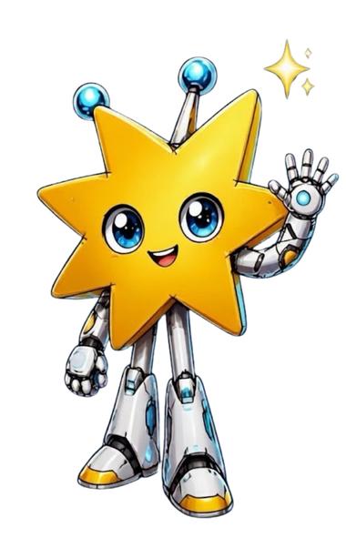

Do Zero Ao Tech
Do Zero Ao Tech é uma plataforma criada para ajudar pessoas que desejam iniciar uma carreira na área de Tecnologia e não sabem por onde começar. Nosso objetivo é reunir conteúdos claros, organizados e acessíveis para orientar quem está dando os primeiros passos.
Aqui você encontrará informações sobre diferentes carreiras em tecnologia, linguagens de programação, ferramentas essenciais, dicas de estudo e recursos gratuitos.
Independentemente da sua idade, experiência ou formação, o Do Zero ao Tech foi pensado para mostrar que sempre é possível aprender e construir uma carreira em tecnologia.
Missão
Ajudar profissionais em início de carreira na área de Tecnologia a descobrir o caminho que mais combina com seus interesses, habilidades e objetivos, oferecendo orientação, conteúdo de qualidade e ferramentas para impulsionar seu desenvolvimento profissional.
Visão
Ser a principal plataforma de referência para quem está iniciando na área de tecnologia, contribuindo para formar profissionais mais preparados, confiantes e conectados com as oportunidades do mercado.
Valores
Acessibilidade: Tornar o conhecimento em tecnologia acessível para todos.
Aprendizado Contínuo: Incentivar a evolução constante e o desenvolvimento de novas habilidades.
Inclusão: Valorizar a diversidade e criar oportunidades para pessoas de diferentes perfis e trajetórias.
Transparência: Compartilhar informações confiáveis e imparciais sobre carreiras e tecnologias.
Lumi

Objetivo
A Lumi nasceu para ser o primeiro passo de quem sente vontade de entrar na tecnologia, mas não sabe por onde começar. Aqui não existe pergunta boba, nem termo técnico sem explicação.
Por que uma estrela-guia?
Uma estrela-guia é aquela que orienta o caminho de quem está navegando sem saber exatamente para onde ir. É esse o papel da Lumi: apontar direções, não decidir por você.
Nossa Equipe
Somos uma equipe que acredita que começar na tecnologia não precisa ser complicado. Criamos o Do Zero ao Tech para transformar dúvidas em caminhos mais claros, acessíveis e possíveis.
Caique Vinicius - Pesquisador e Front-end
Emilly Barauna - Idealização e Conteúdo
Emily Batista - Mascote e Conteúdo
Fernanda Ribeiro - UI Design e Front-end
João Victor Torres - Desenvolvedor Front-end
Vitor Pietro - Desenvolvedor Front-end